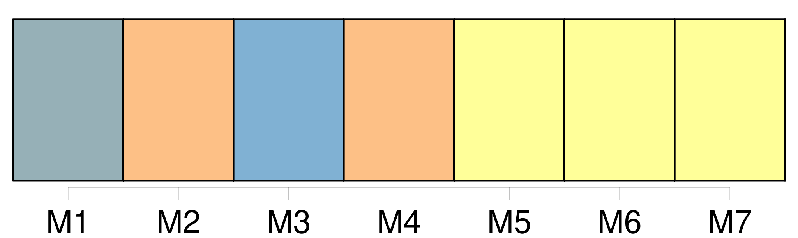

Longueur nb maillons : 19 mentions |
 |
Il y a encore, derrière la maison, l'entrée du potager qui lui donne des soucis, malgré [sa large et forte grille] [dont] les barreaux se terminent en lances pointues comme des fuseaux. [1 phrases] [Cette grille] , elle ne [l'] a jamais vue ouverte. [3 phrases] Et voici qu'à l'instant même où elle y pensait, et sans qu'aucun bruit de [la grille] ne l'eut avertie, elle apercevait tout à coup, venant du potager, un jeune garçon qui s'avançait en lui souriant comme à une amie de toujours. [4 phrases]
— J'ai bien vu qu'il n'était pas méchant, reprit le garçon, et j'ai sauté par-dessus [la grille] pour venir jouer avec vous deux. [22 phrases] Les nouveaux amis l'accompagnèrent jusqu'à [la grille du potager] par [où] il était venu. [22 phrases] Mais, puisque Douce avait si peur d'être vue, il n'y avait qu'à sortir comme lui, par [la grille du potager] [4 phrases]
» [4 phrases] En les voyant s'éloigner, Tou, qui ne pouvait sauter [la grille] , poussa de véritables clameurs. [5 phrases] Et de fait, Tou, qui ne s'inquiétait pas de dénonciation, avait vite compris que, si [la grille] était trop haute, il lui restait la barrière d'entrée si souvent franchie déjà. [23 phrases] Ne l'avait -il pas aperçue ces jours derniers accrochée aux lances pointues de [la haute grille] et se balançant dans le vide, lâchant tantôt une main et tantôt l'autre, au mépris de tout danger?? [74 phrases]
Et Noël ajouta avec malice : [48 phrases] Du pain, du fromage et quelques fruits, et tous deux, oubliant le mauvais temps du matin, sautèrent une fois de plus [la grille] et s'en allèrent vers l'étang. [44 phrases]
Et, tandis que le père range les lignes, Noël et Douce, courant et sautant, regagnent le verger où le chien les attend, dressé de toute sa hauteur contre [la grille du potager]
Ii [252 phrases] Lorsqu'ils sont en vue de [la grille du potager] , Églantine s'arrête, et Noël comprend qu'il ne doit pas l'accompagner plus loin. [1 phrases] Il caresse Tou qui se dresse vers lui et semble l'engager à sauter [la grille] |

|
Il est possible de télécharger la ressource sur la page Ortolang |
Si vous avez des questions ou vous voyez des erreurs, merci d'envoyer un mail à silvia.federzoni89@gmail.com |